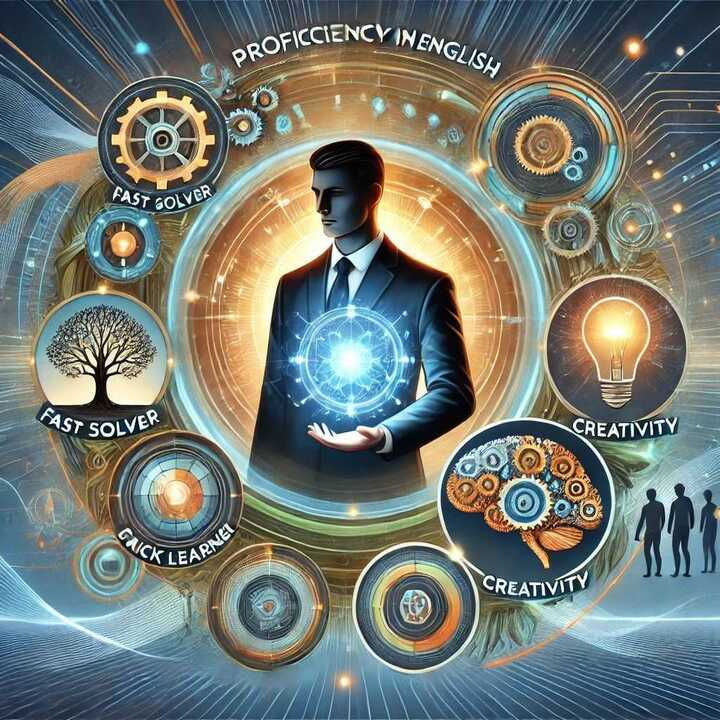

Introduction:
Hello, my name is Alkaakaa Al-Chamaa. I'm a 16-year-old programmer from Lebanon.
My journey has taken me through various exciting projects and collaborations, allowing me to grow both personally and professionally.
I thrive on creativity and innovation, always seeking new challenges and opportunities to learn and improve. Whether it's designing user-friendly interfaces, developing robust software solutions, or creating compelling content, I approach every task with enthusiasm and dedication.
In this portfolio, you will find a showcase of my work, including a website about Sidon and developing Python projects. Each project represents my commitment to excellence and my drive to deliver high-quality results.
Currently, I am expanding my horizons by learning to code,I believe that acquiring coding skills will enable me to create even more innovative solutions and contribute more effectively to my projects. Whether it's designing user-friendly interfaces.I am passionate about using technology to make a positive impact and excited about the endless possibilities that programming offers and look forward to creating meaningful and useful applications.
My Coding Journey:
When I first began my coding journey, it felt like stepping into a whole new world. I was excited yet overwhelmed with all the new information to absorb. My learning path started with Python, and it was a great introduction to programming because of its simplicity and readability. I quickly learned how to work with variables, data types, and basic functions. The beauty of Python, I realized, lies in its versatility—whether it’s for web development, data analysis, or machine learning, Python has a wide range of applications.
Next, I ventured into HTML and CSS, which allowed me to create and style basic webpages. Learning HTML was like learning the structure of a house—it gave me the framework to build content like headings, paragraphs, and images. CSS, on the other hand, was like interior design for my webpage. I learned how to control the layout, colors, fonts, and spacing, giving my website a visually appealing look.
Once I felt comfortable with the basics of web design, I dove into JavaScript. Here, I began to see how I could make my websites interactive. I learned how to use JavaScript functions to handle events like button clicks or mouse movements.
Hopping in the near future to be a professional programer.
Skills and Abilities:
In addition to my technical skills, I bring several valuable abilities to the table:
- *Proficient in English*: I have strong communication skills in English, which enable me to effectively collaborate with diverse teams and understand complex documentation. I can articulate ideas clearly and contribute to discussions in a meaningful way.
- *Fast Problem Solver*: I excel at solving problems quickly and efficiently, often finding innovative solutions to challenges. My approach involves analyzing the issue from various angles and employing creative thinking.
- *Quick Learner*: I have a knack for rapidly acquiring new knowledge and skills, allowing me to adapt to new technologies and programming languages with ease. This helps me stay current and implement new solutions effectively.

- *Critical Thinking*: I excel at analyzing complex problems, evaluating evidence, and making rational decisions, ensuring effective solutions to challenges. My logical approach helps in breaking down issues and finding the best course of action.
- *Creativity*: I am adept at generating unique ideas and innovative solutions, connecting seemingly unrelated concepts to address problems creatively. My imaginative thinking allows me to devise out-of-the-box solutions and enhance projects.
- *Teamwork*: I possess strong collaboration skills, effectively sharing responsibilities, communicating clearly, and managing conflicts to achieve common goals. I am reliable and supportive, always ready to assist team members and ensure success.